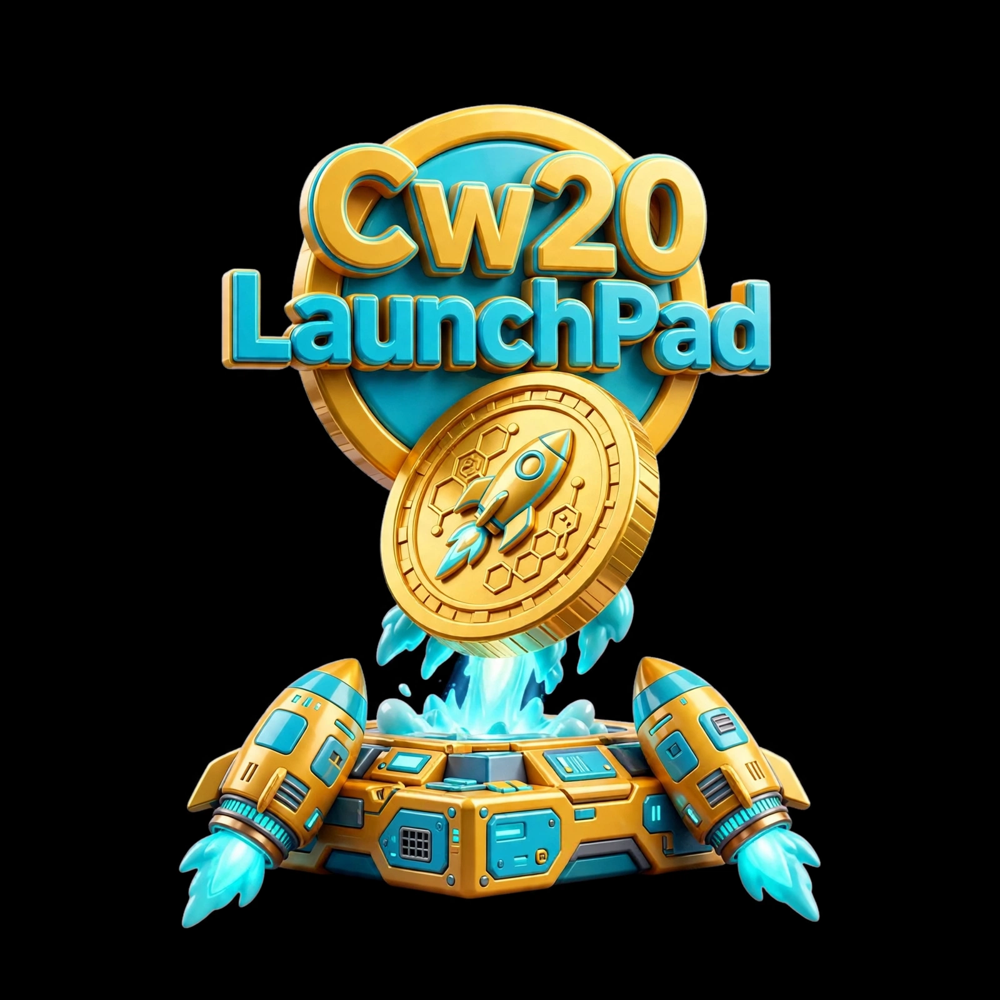

Terra Classic · CW20

Create your own token
Launch a real CW20 token on Terra Classic in minutes. Your wallet creates it and receives the full supply — we never hold your keys.
–
Tokens created
CW20
Standard
Terra Classic
Chain
Tokens
No tokens yet — yours could be the first.
Create your token
1Connect your wallet
Works with Keplr, Keplr Mobile, Galaxy Station and LUNCDash. The connected wallet becomes the token's creator and admin, and receives the full supply.
2Design your token
6 is the Terra Classic standard (the same as LUNC).
Created at launch and sent in full to your wallet. It can never be increased — the token is born with no minter.
3Review before you create
Connect your wallet and fill in the form — the exact token you are about to create will be listed here for review before you sign.
Your tokens
Connect your wallet to see your tokens.
Good to know
- Your token is 100% yours: you are its creator and admin, and the full supply lands in your wallet at creation. LUNC Dev Studio holds no keys and cannot move your tokens or your money.
- The supply is fixed forever: the token is created with no minter, so nobody — not even you — can ever create more. Choose the supply carefully.
- Creating a token does not put it on sale: trading starts only when a liquidity pool is created on a DEX, which is a separate step.
- Creating costs the network fee plus a 100,000 LUNC creation fee, paid to LUNC Dev Studio in the same transaction. Always check the transaction in your wallet before you sign.
LUNC Dev Tokens — a LUNC Dev Studio tool · Terra Classic